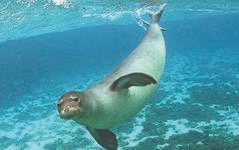
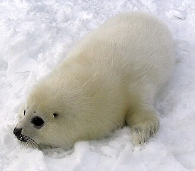

თეთრმუცელა სელაპი
თეთრმუცელა სელაპი (ლათ. Monachus monachus) — ძუძუმწოვარი ცხოველი ნამდვილი სელაპების ოჯახისა. გავრცელებულია კანარისა და მადეირის კუნძულების ზონაში, აღმოსავლეთით — ხმელთაშუა ზღვის გავლით შავ ზღვაში, სადაც მხოლოდ (ისიც იშვიათად) ბულგარეთის სანაპიროებთან გვხვდება. თეთრმუცელა სელაპის სხეულის სიგრძე 3-3,8 მ-ს აღწევს. იკვებება თევზებითა და მსხვილი კიბოსნაირებით. მცირერიცხოვნების გამო სარეწაო მნიშვნელობა არ აქვს. 1982 წელს გამოცემულ „საქართველოს წითელ წიგნში“ შეტანილია როგორც მეტად იშვიათი და მცირერიცხოვანი, გადაშენების გზაზე მდგარი, თუმცა ამჟამად საქართველოს სანაპირო წყლებში იგი უკვე გადაშენებულია და 2006 წელს დამტკიცებულ საქართველოს „წითელ ნუსხაში“ მას მინიჭებული აქვს ბუნების დაცვის საერთაშორისო კავშირის (IUCN) კატეგორია RE (Regionally Extinct) — გადაშენებული რეგიონულ დონეზე.

ლიტერატურა
- ქართული საბჭოთა ენციკლოპედია, ტ. 4, თბ., 1979. — გვ. 641.
- საქართველოს სსრ წითელი წიგნი. 1982, გამომცემლობა „საბჭოთა საქართველო“, თბილისი.
- საქართველოს „წითელი ნუსხა“, დამტკიცებული საქართველოს პრეზიდენტის 2006 წლის 2 მაისის #303 ბრძანებულებით.
გრენლანდიული სელაპი
გრენლანდიური სელაპი (Phoca (Pagophilus) groenlandica) — ძუძუმწოვარი ცხოველი ნამდვილი სელაპების ოჯახისა. მისი სხეულის სიგრძეა 160-195 სმ, წონა — 100-160 კგ. თეთრი ფერისაა, მხოლოდ გვერდებზე აქვს ორი დიდი შავი ლაქა, ბინადრობს არქტიკულ წყლებში და ქმნის ნიუფაუნდლენდის, იან-მაიენის და თეთრი ზღვის ჯოგს. იკვებება პელაგური კიბოსნაირებით, მოლუსკებითა და პატარ-პატარა თევზებით. გრენლანდიური სელაპი სარეწი ობიექტია. იყენებენ მის ცხიმს, აგრეთვე ახალშობილის (თეთრანას) ძვირფას ბეწვს.

ლიტერატურა
- ქართული საბჭოთა ენციკლოwპედია, ტ. 3, თბ., 1978. — გვ. 264.
ჩვეულებრივი სელაპი
ჩვეულებრივი სელაპი (ლათ. Phoca vitulina) — ძუძუმწოვარი ცხოველი ნამდვილი სელაპების ოჯახისა. მისი სხეულის სიგრძეა 1,6–1,9 მეტრი, მასა 60–150 კილოგრამი, მამალი დედალს მცირედ აღემატება. 60–80 სანტიმეტრის სიგრძისა და 8–12 კილოგრამის ნაშიერები, როგორც წესი, დედის მუცელშივე იცვენენ თეთრ ბეწვს და, სხვა სახეობის სელაპებისგან განსხვავებით, მუქი ფერის ბეწვით იბადებიან. საერთოდ შეფერილობის დიდი ცვალებადობა ახასიათებს, სქესობრივი დიმორფიზმი სუსტადაა გამოხატული. ზრდასრული სელაპები დაფარული არიან ყავისფერი, მოწითურო ან რუხი ბეწვით, არასწორი ფორმისა და სხვადასხვა ზომის მრავალი მუქი ლაქით, ზოგჯერ რგოლებსაც წააგვანან. ტანი სავსეა, წინა ფარფლები მოკლე და გრძელი, წვრილი, მოღუნული ბრჭყალებით შეიარაღებული. თავი მცირე ზომისა, დრუნჩი მომრგვალებული, ბოლოსკენ ქვევით ეშვება და V-ის ფორმას ემსგავსება. ვიბრისები ღია ფერისაა, გაშვერილია წინ. ჩვეულებრივი სელაპი ერთ-ერთი ყველაზე ფართოდ გავრცელებული სელაპია, ბინადრობს წყნარი და ატლანტის ოკეანეების ჩრდილოეთ ნაწილების ზომიერ და ცივ სანაპირო წყლებში, მათ შორის ყურეებსა და შიდა ზღვებში. ცნობილია მისი 5 ქვესახეობა. წყალშიც და ხმელეთზეც ცხოვრობენ მარტოდ ან მცირე ზომის შეთხელებულ ჯგუფებად. ჯვარდებიან სანაპიროებზე, ძალიან ფრთხილები და მფრთხალები არიან. იკვებებიან თევზით, თავფეხიანი მოლუსკებითა და კიბოსნაირებით. ისტორიულად ჩვეულებრივ სელაპს სარეწაო მნიშვნელობა აქვს, თუმცა დღეისათვის თითქმის არ მოიპოვებენ.

ლიტერატურა
- Жариков К. А. Обыкновенный тюлень // Большая российская энциклопедия. т. 23. — М., 2013. — стр. 613-614.